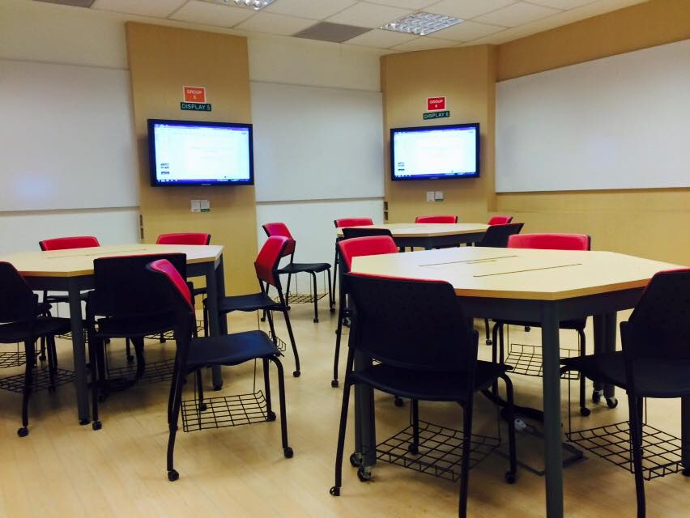

교실 이미지(싱가포르) · 사진: Carissalin / Wikimedia Commons, CC BY-SA 4.0
국제학교 EAL(영어 지원 프로그램) — 왜 배정되고, 어떻게 벗어나나
1. EAL은 무엇인가
EAL은 English as an Additional Language의 줄임말입니다. 영어가 모국어가 아닌 학생이 수업을 따라갈 수 있도록 학교가 붙여 주는 영어 지원입니다. 학교에 따라 ESL·EL·ELL·English Support 등 이름이 다르지만 목적은 같습니다.
먼저 오해부터 풀어야 할 것이 있습니다.
· 별도의 학교나 반이 아닙니다. 정규 학년에 소속된 채 영어 지원이 추가로 붙는 형태가 일반적입니다.
· 유급이 아닙니다. 학년을 내려 보내는 제도와는 다릅니다.
· 벌점이나 낙인도 아닙니다. 다국적 학생이 모이는 학교라면 EAL은 흔한 지원이고, 오히려 지원 없이 방치되는 편이 위험합니다.
※ 명칭·단계 구분·운영 방식은 학교마다 다릅니다. 입학 안내 자료와 담당 교사에게 직접 확인하세요.
2. 왜 배정되나 — 학교가 보는 것은 "학습 영어"
입학·편입 평가에서 학교가 확인하는 것은 친구와 이야기하는 영어가 아니라 교과를 배우는 영어입니다. 이 둘은 늘어나는 속도가 다릅니다.
| 구분 | 생활 영어 | 학습 영어(학교가 보는 것) |
|---|---|---|
| 쓰이는 곳 | 대화·놀이·일상 | 교과서·과제·시험 |
| 필요한 힘 | 듣고 바로 반응하기 | 읽고 정리해 근거로 쓰기 |
| 어휘 | 일상 단어 | 아카데믹 어휘·과목 용어 |
| 느는 속도 | 비교적 빠르다 | 훨씬 천천히 자리 잡는다 |
그래서 말은 유창한데 EAL에 배정되는 일이 생깁니다. 입학 평가에서 읽기 지문 이해와 글쓰기 표본의 비중이 큰 것도 같은 이유입니다. 반대로 문법 문제는 잘 푸는데 자기 생각을 문단으로 쓰지 못하면 역시 지원 대상이 됩니다. (관련: 주재원 자녀 영어과외)
3. 수업은 어떻게 이뤄지나 — 세 가지 형태
시간표에서 한 과목 자리를 EAL로 채우는 방식입니다. 선택과목(제2외국어 등) 대신 들어가는 경우가 많습니다. 집중 지원이 되는 대신 다른 선택과목을 못 듣는 점을 확인해야 합니다.
EAL 담당 교사가 정규 수업에 함께 들어와 과제·자료를 도와줍니다. 수업에서 분리되지 않는 것이 장점입니다.
정해진 시간에 소수 인원을 따로 모아 읽기·쓰기를 집중 지도합니다.
대부분의 학교가 이 중 하나 또는 둘을 섞어 운영하며, 학년과 학생 수준에 따라 형태가 달라집니다. 우리 아이가 어떤 형태인지, 그래서 시간표에서 무엇이 빠지는지를 첫 상담에서 반드시 확인하세요.
4. 학부모가 자주 하는 다섯 가지 오해
· "시간이 지나면 저절로 나온다." 생활 영어는 늘지만, 글쓰기·과목 용어는 따로 훈련하지 않으면 잘 올라오지 않습니다.
· "EAL이면 성적은 포기해야 한다." 아닙니다. 다만 영어 때문에 실력보다 낮게 나오는 구간이 있으므로, 그 구간을 짧게 끝내는 것이 관건입니다.
· "한국에서 영어학원 오래 다녔으니 괜찮다." 시험 문제 푸는 영어와 과제를 쓰는 영어는 다릅니다.
· "영어만 잡으면 된다." 실제로는 수학·과학도 영어로 막힙니다. 개념은 아는데 영어 용어와 문제 문장 때문에 틀리는 경우가 많습니다. (알지브라 공부법)
· "학교에 물어보면 실례일까." 오히려 반대입니다. 담당 교사에게 현재 단계와 다음 단계 조건을 물으면 대부분 구체적으로 알려 줍니다.
5. EAL을 벗어나는 기준
모든 학교에 공통으로 적용되는 기준은 없습니다. 일반적으로는 다음을 함께 보고 단계적으로 지원을 줄이는 방식으로 알려져 있습니다.
· 교과 담당 교사의 평가 — 수업에서 과제를 스스로 해내는지.
· 글쓰기 표본 — 근거를 들어 문단을 구성할 수 있는지.
· 학교가 쓰는 평가 결과 — 읽기·쓰기 진단 결과(학교마다 도구가 다릅니다).
기간을 미리 못 박아 말할 수 없는 이유가 여기 있습니다. 아이의 출발점, 학년, 과제 양이 모두 다르기 때문입니다. "언제 나올 수 있나요"보다 "다음 단계로 가려면 무엇이 더 필요한가요"를 묻는 편이 훨씬 빠릅니다.
6. 집에서·과외로 보완하는 법
📖 영어 — 읽기 레벨과 문단 쓰기
· 읽기 레벨 올리기 — 학교 도서관에서 지금 수준보다 조금 위의 책을 꾸준히. 읽고 나서 세 문장으로 요약해 말하게 하면 학습 영어로 이어집니다.
· 아카데믹 어휘와 지시어 — analyze·evaluate·justify·compare 같은 지시어를 정확히 이해하는 것이 점수를 가릅니다. 지시어를 오해하면 아무리 길게 써도 빗나갑니다.
· 문단 구조 — 주장 → 근거 → 분석 → 연결. 한 문단부터 완성하는 연습을 반복합니다. (영어 공부법)
📐 과목 영어 — 수학·과학 용어
수학은 개념보다 영어 용어와 문제 문장에서 막힙니다. 과목별 용어를 정리하고 풀이 과정(show your work)을 영어로 쓰는 연습을 함께 합니다. 국제학교는 답만 맞으면 되는 채점이 아니기 때문입니다.
🗣️ 말하기 — 수업 참여도 평가다
발표와 토론 참여가 성적에 들어가는 학교가 많습니다. 짧게라도 자기 의견을 이유와 함께 말하는 연습을 시켜 두면 첫 학기가 훨씬 수월합니다.
1:1 수업의 장점은 아이의 실제 과제와 채점 기준표를 놓고 볼 수 있다는 점입니다. 학교가 지적한 부분을 그대로 고치는 쪽이, 일반 영어 교재를 새로 시작하는 것보다 빠릅니다. 입학 전 단계부터의 준비는 국제학교 입학 준비 총정리에 정리해 두었습니다.
정리
EAL은 낙인이 아니라 지원입니다. ① 학교가 보는 것은 학습 영어이고 ② 지원 형태는 별도 수업·교실 내 지원·소그룹으로 갈리며 ③ 벗어나는 기준은 학교마다 다릅니다. 그래서 담당 교사에게 다음 단계 조건을 묻고, 집에서는 읽기 레벨·문단 쓰기·과목 용어를 잡는 것이 가장 빠른 길입니다. 30분 무료 상담으로 우리 아이 현재 단계부터 점검해 보세요.